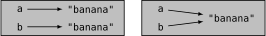
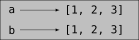
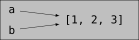
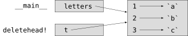

Arrays
This chapter presents one of Julia’s most useful built-in types, arrays. You will also learn about objects and what can happen when you have more than one name for the same object.
An Array is a Sequence
Like a string, an array is a sequence of values. In a string, the values are characters; in an array, they can be any type. The values in an array are called elements or sometimes items.
There are several ways to create a new array; the simplest is to enclose the elements in square brackets ([ ]):
[10, 20, 30, 40]
["crunchy frog", "ram bladder", "lark vomit"]The first example is an array of four integers. The second is an array of three strings. The elements of an array don’t have to be the same type. The following array contains a string, a float, an integer, and another array:
["spam", 2.0, 5, [10, 20]]An array within another array is nested.
An array that contains no elements is called an empty array; you can create one with empty brackets, [].
As you might expect, you can assign array values to variables:
julia> cheeses = ["Cheddar", "Edam", "Gouda"];
julia> numbers = [42, 123];
julia> empty = [];
julia> print(cheeses, " ", numbers, " ", empty)
["Cheddar", "Edam", "Gouda"] [42, 123] Any[]The function typeof can be used to find out the kind of the array:
julia> typeof(cheeses)
Array{String,1}
julia> typeof(numbers)
Array{Int64,1}
julia> typeof(empty)
Array{Any,1}The kind of the array is specified between curly braces and is composed of a type and a number. The number indicate the dimensions. The array empty contains values of type Any. This is a predefined type that can represent any type.
Arrays Are Mutable
The syntax for accessing the elements of an array is the same as for accessing the characters of a string—the bracket operator. The expression inside the brackets specifies the index. Remember that the indices start at 1:
julia> cheeses[1]
"Cheddar"Unlike strings, arrays are mutable. When the bracket operator appears on the left side of an assignment, it identifies the element of the array that will be assigned:
julia> numbers[2] = 5
5
julia> print(numbers)
[42, 5]The second element of numbers, which used to be 123, is now 5.
Figure 10.1 shows the state diagrams for cheeses, numbers and empty.
Arrays are represented by boxes and the elements of the array inside. cheeses refers to an array with three elements indexed 1, 2 and 3. numbers contains two elements; the diagram shows that the value of the second element has been reassigned from 123 to 5. empty refers to an array with no elements.
Array indices work the same way as string indices:
Any integer expression can be used as an index.
If you try to read or write an element that does not exist, you get a
BoundsError.The keyword
endpoints to the last index of the array.
The ∈ operator also works on arrays:
julia> "Edam" ∈ cheeses
true
julia> "Brie" in cheeses
falseTraversing an Array
The most common way to traverse the elements of an array is with a for loop. The syntax is the same as for strings:
for cheese in cheeses
println(cheese)
endThis works well if you only need to read the elements of the array. But if you want to write or update the elements, you need the indices. A common way to do that is to use the built-in function length:
for i in 1:length(numbers)
numbers[i] = numbers[i] * 2
endThis loop traverses the array and updates each element. length returns the number of elements in the array. Each time through the loop i gets the index of the next element. The assignment statement in the body uses i to read the old value of the element and to assign the new value.
A for loop over an empty array never runs the body:
for x in []
println("This can never happens.")
endAlthough an array can contain another array, the nested array still counts as a single element. The length of this array is four:
["spam", 1, ["Brie", "Roquefort", "Camembert"], [1, 2, 3]]Array Slices
The slice operator also works on arrays:
julia> t = ['a', 'b', 'c', 'd', 'e', 'f'];
julia> print(t[1:3])
['a', 'b', 'c']
julia> print(t[3:end])
['c', 'd', 'e', 'f']The slice operator [:], makes a copy of the whole array:
julia> print(t[:])
['a', 'b', 'c', 'd', 'e', 'f']Since arrays are mutable, it is often useful to make a copy before performing operations that modify arrays.
A slice operator on the left side of an assignment can update multiple elements:
julia> t[2:3] = ['x', 'y'];
julia> print(t)
['a', 'x', 'y', 'd', 'e', 'f']Array Library
Julia provides functions that operate on arrays. For example, push! adds a new element to the end of an array:
julia> t = ['a', 'b', 'c'];
julia> push!(t, 'd');
julia> print(t)
['a', 'b', 'c', 'd']append! add the elements of the second array to the end of the first:
julia> t1 = ['a', 'b', 'c'];
julia> t2 = ['d', 'e'];
julia> append!(t1, t2);
julia> print(t1)
['a', 'b', 'c', 'd', 'e']This example leaves t2 unmodified.
sort! arranges the elements of the array from low to high:
julia> t = ['d', 'c', 'e', 'b', 'a'];
julia> sort!(t);
julia> print(t)
['a', 'b', 'c', 'd', 'e']sort returns a copy of the elements of the array in order:
julia> t1 = ['d', 'c', 'e', 'b', 'a'];
julia> t2 = sort(t1);
julia> print(t1)
['d', 'c', 'e', 'b', 'a']
julia> print(t2)
['a', 'b', 'c', 'd', 'e']As a style convention in Julia, ! is appended to names of functions that modify their arguments.
Map, Filter and Reduce
To add up all the numbers in an array, you can use a loop like this:
function addall(t)
total = 0
for x in t
total += x
end
total
endtotal is initialized to 0. Each time through the loop, x gets one element from the array. The += operator provides a short way to update a variable. This augmented assignment statement,
total += xis equivalent to
total = total + xAs the loop runs, total accumulates the sum of the elements; a variable used this way is sometimes called an accumulator.
Adding up the elements of an array is such a common operation that Julia provides it as a built-in function, sum:
julia> t = [1, 2, 3, 4];
julia> sum(t)
10An operation like this that combines a sequence of elements into a single value is sometimes called reduce.
Sometimes you want to traverse one array while building another. For example, the following function takes an array of strings and returns a new array that contains capitalized strings:
function capitalizeall(t)
res = []
for s in t
push!(res, uppercase(s))
end
res
endres is initialized with an empty array; each time through the loop, we append the next element. So res is another kind of accumulator.
An operation like capitalizeall is sometimes called a map because it “maps” a function (in this case uppercase) onto each of the elements in a sequence.
Another common operation is to select some of the elements from an array and return a subarray. For example, the following function takes an array of strings and returns a array that contains only the uppercase strings:
function onlyupper(t)
res = []
for s in t
if s == uppercase(s)
push!(res, s)
end
end
res
endAn operation like onlyupper is called a filter because it selects some of the elements and filters out the others.
Most common array operations can be expressed as a combination of map, filter and reduce.
Dot Syntax
For every binary operator like ^, there is a corresponding dot operator .^ that is automatically defined to perform ^ element-by-element on arrays. For example, [1, 2, 3] ^ 3 is not defined, but [1, 2, 3] .^ 3 is defined as computing the elementwise result [1^3, 2^3, 3^3]:
julia> print([1, 2, 3] .^ 3)
[1, 8, 27]Any Julia function f can be applied elementwise to any array with the dot syntax. For example to capitalize an array of strings, we don't need a loop:
julia> t = uppercase.(["abc", "def", "ghi"]);
julia> print(t)
["ABC", "DEF", "GHI"]This is an elegant way to create a map. The function capitalizeall can be implemented by a one-liner:
function capitalizeall(t)
uppercase.(t)
endDeleting (Inserting) Elements
There are several ways to delete elements from an array. If you know the index of the element you want, you can use splice!:
julia> t = ['a', 'b', 'c'];
julia> splice!(t, 2)
'b': ASCII/Unicode U+0062 (category Ll: Letter, lowercase)
julia> print(t)
['a', 'c']splice! modifies the array and returns the element that was removed.
pop! deletes and returns the last element:
julia> t = ['a', 'b', 'c'];
julia> pop!(t)
'c': ASCII/Unicode U+0063 (category Ll: Letter, lowercase)
julia> print(t)
['a', 'b']popfirst! deletes and returns the first element:
julia> t = ['a', 'b', 'c'];
julia> popfirst!(t)
'a': ASCII/Unicode U+0061 (category Ll: Letter, lowercase)
julia> print(t)
['b', 'c']The functions pushfirst! and push! insert an element at the beginning, respectively at the end of the array.
If you don’t need the removed value, you can use the function deleteat!:
julia> t = ['a', 'b', 'c'];
julia> print(deleteat!(t, 2))
['a', 'c']The function insert! inserts an element at a given index:
julia> t = ['a', 'b', 'c'];
julia> print(insert!(t, 2, 'x'))
['a', 'x', 'b', 'c']Arrays and Strings
A string is a sequence of characters and an array is a sequence of values, but an array of characters is not the same as a string. To convert from a string to an array of characters, you can use the function collect:
julia> t = collect("spam");
julia> print(t)
['s', 'p', 'a', 'm']The collect function breaks a string or another sequence into individual elements.
If you want to break a string into words, you can use the split function:
julia> t = split("pining for the fjords");
julia> print(t)
SubString{String}["pining", "for", "the", "fjords"]An optional argument called a delimiter specifies which characters to use as word boundaries. The following example uses a hyphen as a delimiter:
julia> t = split("spam-spam-spam", '-');
julia> print(t)
SubString{String}["spam", "spam", "spam"]join is the inverse of split. It takes an array of strings and concatenates the elements:
julia> t = ["pining", "for", "the", "fjords"];
julia> s = join(t, ' ')
"pining for the fjords"In this case the delimiter is a space character. To concatenate strings without spaces, you don't specify a delimiter.
Objects and Values
An object is something a variable can refer to. Until now, you could use “object” and “value” interchangeably.
If we run these assignment statements:
a = "banana"
b = "banana"We know that a and b both refer to a string, but we don’t know whether they refer to the same string. There are two possible states, shown in Figure 10.2.

In one case, a and b refer to two different objects that have the same value. In the second case, they refer to the same object.
To check whether two variables refer to the same object, you can use the ≡ (\equiv TAB) or === operator.
julia> a = "banana"
"banana"
julia> b = "banana"
"banana"
julia> a ≡ b # false for Julia v0.6
trueIn this example, Julia only created one string object, and both a and b refer to it. But when you create two arrays, you get two objects:
julia> a = [1, 2, 3];
julia> b = [1, 2, 3];
julia> a ≡ b
falseSo the state diagram looks like Figure 10.3.

In this case we would say that the two arrays are equivalent, because they have the same elements, but not identical, because they are not the same object. If two objects are identical, they are also equivalent, but if they are equivalent, they are not necessarily identical.
To be precise an object has a value. If you evaluate [1, 2, 3], you get an array object whose value is a sequence of integers. If another array has the same elements, we say it has the same value, but it is not the same object.
Aliasing
If a refers to an object and you assign b = a, then both variables refer to the same object:
julia> a = [1, 2, 3];
julia> b = a;
julia> b ≡ a
trueThe state diagram looks like Figure 10.4.

The association of a variable with an object is called a reference. In this example, there are two references to the same object.
An object with more than one reference has more than one name, so we say that the object is aliased.
If the aliased object is mutable, changes made with one alias affect the other:
julia> b[1] = 42
42
julia> print(a)
[42, 2, 3]Although this behavior can be useful, it is error-prone. In general, it is safer to avoid aliasing when you are working with mutable objects.
For immutable objects like strings, aliasing is not as much of a problem. In this example:
a = "banana"
b = "banana"It almost never makes a difference whether a and b refer to the same string or not.
Array Arguments
When you pass an array to a function, the function gets a reference to the array. If the function modifies the array, the caller sees the change. For example, deletehead! removes the first element from an array:
function deletehead!(t)
popfirst!(t)
endHere’s how it is used:
julia> letters = ['a', 'b', 'c'];
julia> deletehead!(letters);
julia> print(letters)
['b', 'c']The parameter t and the variable letters are aliases for the same object. The stack diagram looks like Figure 10.5.

Since the array is shared by two frames, I drew it between them.
It is important to distinguish between operations that modify arrays and operations that create new arrays. For example, push! modifies an array, but vcat creates a new array.
Here’s an example using push!:
julia> t1 = [1, 2];
julia> t2 = push!(t1, 3);
julia> print(t1)
[1, 2, 3]t2 is an alias of t1.
Here’s an example using vcat:
julia> t3 = vcat(t1, [4]);
julia> print(t1)
[1, 2, 3]
julia> print(t3)
[1, 2, 3, 4]The result of vcat is a new array, and the original array is unchanged.
This difference is important when you write functions that are supposed to modify arrays.
For example, this function does not delete the head of a array:
function baddeletehead(t)
t[2:end] # WRONG!
endThe slice operator creates a new array and the assignment makes t refer to it, but that doesn’t affect the caller.
julia> t4 = baddeletehead(t3);
julia> print(t3)
[1, 2, 3, 4]
julia> print(t4)
[2, 3, 4]At the beginning of baddeletehead, t and t3 refer to the same array. At the end, t refers to a new array, but t3 still refers to the original, unmodified array.
An alternative is to write a function that creates and returns a new array. For example, tail returns all but the first element of an array:
function tail(t)
t[2:end]
endThis function leaves the original array unmodified. Here’s how it is used:
julia> letters = ['a', 'b', 'c'];
julia> rest = tail(letters);
julia> print(rest)
['b', 'c']Debugging
Careless use of arrays (and other mutable objects) can lead to long hours of debugging. Here are some common pitfalls and ways to avoid them:
Most array functions modify the argument. This is the opposite of the string functions, which return a new string and leave the original alone.
If you are used to writing string code like this:
new_word = strip(word)It is tempting to write array code like this:
t2 = sort!(t1)Because sort! returns the modified original array t1, t2 is an alias of t1.
Before using array functions and operators, you should read the documentation carefully and then test them in interactive mode.
Pick an idiom and stick with it.
Part of the problem with arrays is that there are too many ways to do things. For example, to remove an element from an array, you can use
pop!,popfirst!,delete_at, or even a slice assignment. To add an element, you can usepush!,pushfirst!,insertorvcat. Assuming thattis an array andxis an array element, these are correct:
insert!(t, 4, x)
push!(t, x)
append!(t, [x])And these are wrong:
insert!(t, 4, [x]) # WRONG!
push!(t, [x]) # WRONG!
vcat(t, [x]) # WRONG!Make copies to avoid aliasing.
If you want to use a function like
sort!that modifies the argument, but you need to keep the original array as well, you can make a copy:
julia> t = [3, 1, 2];
julia> t2 = t[:];
julia> sort!(t2);
julia> print(t)
[3, 1, 2]
julia> print(t2)
[1, 2, 3]In this example you could also use the built-in function sort, which returns a new, sorted array and leaves the original alone:
julia> t2 = sort(t);
julia> println(t)
[3, 1, 2]
julia> println(t2)
[1, 2, 3]Glossary
array: A sequence of values.
element: One of the values in an array (or other sequence), also called items.
nested array: An array that is an element of another array.
accumulator: A variable used in a loop to add up or accumulate a result.
augmented assignment: A statement that updates the value of a variable using an operator like +=.
dot operator: Binary operator that is applied element-by-element to arrays.
dot-syntax: Syntax used to apply a function elementwise to any array.
reduce: A processing pattern that traverses a sequence and accumulates the elements into a single result.
map: A processing pattern that traverses a sequence and performs an operation on each element.
filter: A processing pattern that traverses a sequence and selects the elements that satisfy some criterion.
object: Something a variable can refer to. An object has a type and a value.
equivalent: Having the same value.
identical: Being the same object (which implies equivalence).
reference: The association between a variable and its value.
aliasing: A circumstance where two or more variables refer to the same object.
delimiter: A character or string used to indicate where a string should be split.
Exercises
Exercise 10-1
Write a function called nestedsum that takes an array of arrays of integers and adds up the elements from all of the nested arrays. For example:
julia> t = [[1, 2], [3], [4, 5, 6]];
julia> nestedsum(t)
21Exercise 10-2
Write a function called cumulsum that takes an array of numbers and returns the cumulative sum; that is, a new array where the $i$th element is the sum of the first $i+1$ elements from the original array. For example:
julia> t = [1, 2, 3];
julia> print(cumulsum(t))
Any[1, 3, 6]Exercise 10-3
Write a function called interior that takes an array and returns a new array that contains all but the first and last elements. For example:
julia> t = [1, 2, 3, 4];
julia> print(interior(t))
[2, 3]Exercise 10-4
Write a function called interior! that takes an array, modifies it by removing the first and last elements, and returns nothing. For example:
julia> t = [1, 2, 3, 4];
julia> interior!(t)
julia> print(t)
[2, 3]Exercise 10-5
Write a function called issort that takes an array as a parameter and returns true if the array is sorted in ascending order and false otherwise. For example:
julia> issort([1, 2, 2])
true
julia> issort(['b', 'a'])
falseExercise 10-6
Two words are anagrams if you can rearrange the letters from one to spell the other. Write a function called isanagram that takes two strings and returns true if they are anagrams.
Exercise 10-7
Write a function called hasduplicates that takes an array and returns true if there is any element that appears more than once. It should not modify the original array.
Exercise 10-8
This exercise pertains to the so-called Birthday Paradox, which you can read about at http://en.wikipedia.org/wiki/Birthday_paradox.
If there are 23 students in your class, what are the chances that two of you have the same birthday? You can estimate this probability by generating random samples of 23 birthdays and checking for matches. Hint: you can generate random birthdays with rand(1:365).
Exercise 10-9
Write a function that reads the file words.txt and builds an array with one element per word. Write two versions of this function, one using push! and the other using the idiom t = [t..., x]. Which one takes longer to run? Why?
Exercise 10-10
To check whether a word is in the word array, you could use the ∈ operator, but it would be slow because it searches through the words in order.
Because the words are in alphabetical order, we can speed things up with a bisection search (also known as binary search), which is similar to what you do when you look a word up in the dictionary. You start in the middle and check to see whether the word you are looking for comes before the word in the middle of the array. If so, you search the first half of the array the same way. Otherwise you search the second half.
Either way, you cut the remaining search space in half. If the word array has 113,809 words, it will take about 17 steps to find the word or conclude that it’s not there.
Write a function called inbisect that takes a sorted array and a target value and returns true if the word is in the array and false if it’s not.
Exercise 10-11
Two words are a “reverse pair” if each is the reverse of the other. Write a program that finds all the reverse pairs in the word array.
Exercise 10-12
Two words “interlock” if taking alternating letters from each forms a new word. For example, “shoe” and “cold” interlock to form “schooled”.
Credit: This exercise is inspired by an example at http://puzzlers.org.
Write a program that finds all pairs of words that interlock. Hint: don’t enumerate all pairs!
Can you find any words that are three-way interlocked; that is, every third letter forms a word, starting from the first, second or third?